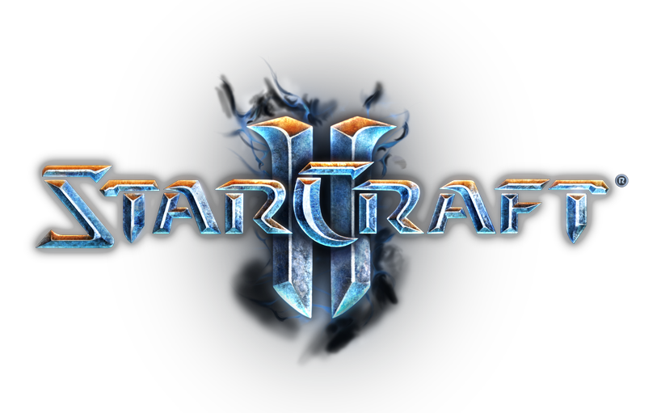
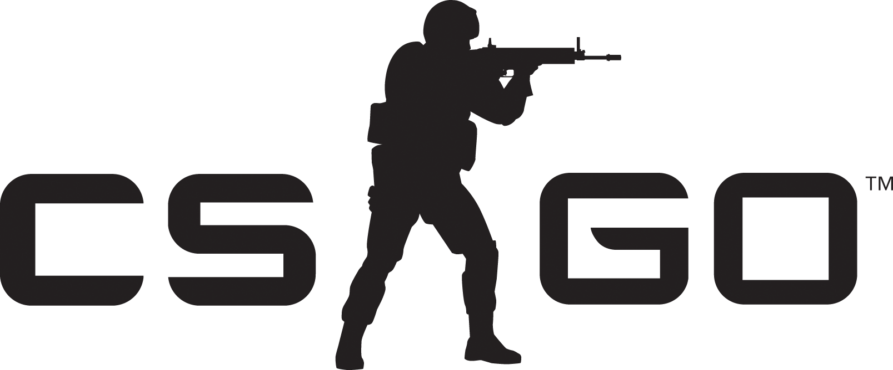
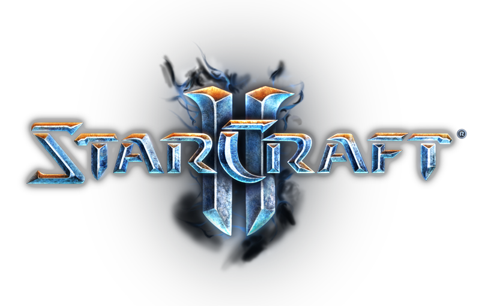
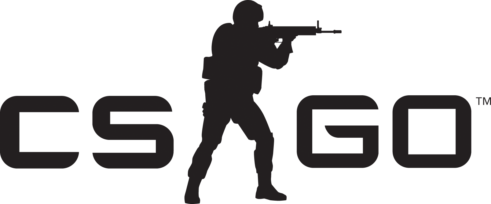

eSports
Du phénomène de niche au succès planétaire
eSports : kézako ?
Le sport électronique, ou e-sport, désigne en fait la pratique d’un jeu vidéo multijoueurs dans le cadre d’une compétition. Celle-ci peut se pratiquer en ligne ou lors d’événements où les joueurs se rencontrent "en vrai".
— Vincent Matalon
Quels jeux considérer comme de l'eSport ?
Qu'est-ce qui fait un bon jeu d'eSports ?
Pas de place pour la chance, seul le talent permet la victoire.
Une communauté nombreuse et active.
Un jeu aussi agréable à jouer qu'à regarder.
Les types de jeux les plus populaires
Les FPS (pour First Person Shooter, c'est à dire "jeu de tir à la première personne" ou encore "jeu de tir en vue subjective") sont des jeux vidéo dans lequels le personnage que l'on incarne évolue dans un monde en trois dimensions. Dans ce type de jeu, le joueur voit l'action à travers les yeux du personnage qu'il incarne. Le principal élément de jeu des FPS est le combat, généralement à l'arme à feu. Bien que reprenant les même composantes, il se distingue des TPS (Third Person Shooter), dans lesquels le personnage incarné est vu de dos. On parle quelques fois de "doom-like" pour parler des FPS, en référence au premier jeu de tir à la première personne sorti en 1993: Doom.
Les FPS se veulent être des jeux réalistes, dans un environnement en trois dimensions et avec un nombre d'ennemis plus ou moins important. Sur PC, un FPS est souvent joué avec un clavier et une souris, tandis que sur console, les joueurs utilisent généralement les deux sticks analogiques et les gachettes pour contrôler leur joueur. Lorsqu'un FPS ne peut se jouer qu'en ligne, on parle de MMOFPS (pour Massively Multiplayer Online First Person Shooter). Les joueurs s'affrontent alors en équipe ou les uns contre les autres avec des objectifs, un temps de jeu, et des environnements différents selon les modes de jeu.En savoir plus
Les RTS (pour Real-Time Strategy, c'est à dire "jeu de stratégie en temps réel") sont des jeux vidéo dans lesquels le joueur dirige soit une armée soit un groupe de personnages. La plupart des RTS se jouent sur PC (avec un clavier et une souris), et en ligne sur internet ou sur un réseau local (LAN). Les joueurs doivent ainsi faire s'affronter leur armée à celle des autres joueurs et remplir différents objectifs. Contrairement au jeu de stratégie au tour par tour, les RTS ont une dimension plus réaliste car les actions des deux joueurs peuvent se dérouler en même temps. De plus, le "temps réel" des RTS demande aux joueurs de la réflexion, une grande connaissance des mécanique du jeu et des réflexes.
En effet, les plus grands joueurs de RTS produisent en moyenne 300 Actions Par Minutes (APM), soit 5 actions par secondes durant une partie; alors qu'un joueur débuant avec des connaissances minimale du jeu tournera entre 50 et 80 APM. Les principales mécaniques de jeu des RTS sont l'exploration de la carte pour trouver des ressources, la collecte de ressources permettant de produire des troupes par exemple, des alliances diplomatiques, la construction de batiment de production, la capture ou la destruction d'unités ou de bâtiments ennemis, etc. Enfin, on distingue généralement deux types de RTS: ceux avec une caméra près du sol, dans lesquels le joueur contrôle un petit groupe de personnages; et ceux avec une caméra plus éloigné du sol ou le joueur contrôle toute une armée et dans lesquels la gestion unité par unité n'est quasimment pas présente.En savoir plus
Les MOBA (pour Multiplayer Online Battle Arena, c'est à dire "combat d'arène multijoueur en ligne") sont des jeux vidéo dans lesquels le joueur incarne un personnage, généralement vu du dessus, et affronte en équipe (généralement cinq joueurs par équipe) d'autres joueurs via internet ou via un réseau LAN. Ce type de jeu se rapproche des jeux de stratégies en temps réel (RTS) avec une dimension jeu de rôle (RPG, Role Play Game), car le joueur n'incarne qu'un joueur par partie, ayant des propriété unique. Généralement, les mécaniques ne changent pas beaucoup d'un jeu à l'autre: le schéma de la carte reste le même (trois chemins différents et une jungle), un système de récolte de ressource, des tours de défense et un objectif à détruire. On parle quelques fois de "DotA-like" pour parler des MOBA, en référence a une carte du jeu "Warcraft III: Reign of Chaos" sorti en 2003: DotA.
Le terrain de jeu d'un moba reprend généralement le même schéma, à savoir deux camps où les joueurs réapparaissent après s'être fait éliminer, trois chemins menant d'un camp à l'autre (un par le haut, un par le milieu et un par le bas de la carte), et une jungle contenant divers bonus. Les cartes sont symétriques afin de ne pas avantager un camp. De plus, le terrain de jeu est affecté par un "brouillard de guerre", empêchant la vision des adversaires lorsque la zone n'a pas été récemment visité. (voir schéma type d'une carte de MOBA)
{kind=link}
Les Versus Fighting Game (ou VS fighting ou encore "jeux de combat") sont des jeux vidéo dans lesquels le joueur incarne un personnage. Il fait alors face à un autre personnage, soit joué par une intelligence artificelle, soit joué par une autre personne (le combat à alors lieu via internet ou via un LAN). On distingue différents types de jeux de combat: les combat à l'arme blanche dans lesquels les joueurs se battent à l'aide d'armes diverses; les combats d'arts martiaux dans lesquels les joueurs se battent à main nues, en s'inspirant de techniques de combat réelles; et enfin, les combats fantastiques dans lesquels les coups utilisés sont pour la grande majorité inventés. Cepandant, les mécaniques des jeux restent les mêmes: les deux combattants possèdent un barre d'énergie, qui une fois vide met fin à la partie, des coups (ou combinaison de coups) spéciaux, des défenses (afin d'annuler ou diminuer les dégats reçu d'une attaque ennemie).
On retrouve ce type de jeu sur toutes les plateforme de jeu vidéo (PC, console de salon, console portable, smartphone, borne d'arcade, etc). Il existe deux façon de représenter les combats: sur un unique plan (les combattants peuvent être représentés en 3D) ou alors sur un terrain en 3D offrant plus de réalisme et de possibilités de coups (ou de combinaison de coups). Enfin, chaque VS Fighthing a, en général, les même types de combattants: les personnages polyvalent, plutôt destiné aux nouveaux joueurs car faciles à prendre en main, des combattants vif, infligeant peu de dégat mais à une cadence plus élevé et à l'inverse les combattants puissants, les attaquants à distance ou encore les "chopeur" qui attaque à l'aide de projections.En savoir plus
Les MOBA les plus populaires
 




League of Legends est incontestablement le jeu le plus populaire. C'est un MOBA développé et édité par Riot Games sortie en octobre 2009 sur PC et Mac. C'est le MOBA le plus joué du monde, et c'est aussi le jeu le plus joué du monde, toutes catégories confondues. Il y a plus de 70 millions de joueurs inscrits, dont environ 12 millions sont actifs par jour. Cette popularité peut notamment s'expliquer grâce à un point : le jeu est un Free To Play, c'est à dire qu'il est gratuit. Le jeu en lui même est un MOBA tout ce qu'il y a de plus classique : deux équipes de 5 joueurs qui s'affrontent pour détruire le "Nexus" adverse.
Après le succès de Warcraft 3 dont l'un des modes ces avérées être le fondateur du MOBA, Blizzard décide de faire un nouveau RTS Starcraft qui sortira en 1998 sur PC, se déroulant sur univers futuriste nous laissant le choix entre trois factions les Terrans, les descendants des colons terriens possédant des véhicules militaires très développés (vaisseaux, avions se transformant en méca, char a canon rétractable...) , les Zergs des aliens mutants sans cesse et possédants un esprit de ruche, et enfin les Protoss une antique race alien de forme humanoïde possédants des sens et une technologie impensable pour l'homme du 21ème siècle.
Ce jeu à connu un énorme succès en Corée du Sud, et à même inventé le concept de l'eSport en plus de relancer l'économie du marché informatique dans ce pays, plus qu'un jeu, il est presque passé au stade de légende pour nos joueurs asiatiques et possèdent une communauté proche à celle du tennis (beaucoup regarde, mais peux y jouent (au niveau professionnel) ceux qui augmente le mérite d'être joueur professionnel sur ceux jeu, sans empêches à ce jeux de faire un millions de joueur quotidiens (chiffre de 2015 et pour Starcraft 2).
Dans la catégorie des FPS, Counter-Strike est sans conteste le roi de l'eSport. Il a été développé par Valve, édité par Sierra Studios, et est sortie en novembre 2000. Counter-Strike est en fait une modification du jeu "Half-Life" lui aussi développé par Valve. La dernière version est sortie en 2012 et se nomme "Counter-Strike : Global Offensive". Le principe du jeu est simple : deux équipes de 5 joueurs s'affrontent, l'une constitue les terroristes et doit poser une bombe ou tuer tous les membres de l'autre équipe. Cette autre équipe, ce sont les anti-terroristes, qui ont pour but de tuer tous les terroristes ou de désamorcer la bombe si elle a été posée.
L'un des jeux de combat les plus célèbre au monde, malgré ses débuts peu convaincant, il fait partis lui aussi du domaine de l'e-sport. Le principe du jeu : deux combattants sur un terrain en 2D s'affrontant jusqu'à que l'un d'entre eux soit KO. C'est ainsi avec une variété de champion haut en couleurs possédant chacun leurs styles de jeu, couplé avec un bon système d’équilibrage et une énorme liste de combos laissant peu de place aux spam dans les niveaux professionnels.
Cependant malgré ces atouts Street Fighters possèdent un public plus faibles que les autres gros titre de l'e-sport pou cause que celui-ci est beaucoup plus ciblé, et la prise en main un peu moins accessible qui empêche les plus jeunes de ce lancer et laisse donc place à un public plus matures.
L'eSport : une discipline "classique" ?
Un marché florissant
Sponsors
De nos jours, les sponsors sont très présents dans l'eSport. En effet, toutes les grandes équipes ont un ou plusieurs sponsors.
Salaires des joueurs
Comme les "vrais" sportifs, les joueurs professionnels sont rémunérés. Ce sont principalement les sponsors qui payent les salaires des joueurs. Bien loin de ceux des footballeurs, ces salaires sont tout de même en nette augmentation au fil des ans.
Prix des compétitions
Les vainqueurs des compétitions reçoivent des prix dont le montant peut atteindre des sommes très élevées. Par exemple, les gagnants du dernier tournoi mondial de League of Legends ont remporté près de 1 million d'euros.
Une popularité toujours croissante
L’eSport est devenu un véritable business (sponsors, salaire des joueurs pros, prix pour les gagnants) Sa popularité est grandissante, des milliers de gens suivent les compétitions (Twitch, bars, ou grands établissements : Grand Rex ou Trianon par exemple). Par ailleurs, le dopage a malheureusement fait son apparition sur la scène esport (avec par exemple l’équipe Cloud9 sur CSGO qui était sous Adderall lors de la finale de l’ESWC 2015 à Montréal). source
Les joueurs professionnels d’eSport sont comparables à des joueurs professionnels d’un sport dit “classique” tel que le football par exemple. En effet, ils s’entraînent dur et sont suivis avant chaque rencontre. Aussi, ils sont de plus en plus considérés comme des célébrités, comme précisé dans l’extrait suivant : “Ils s’exercent plusieurs heures par jour, s’entourent d’entraîneurs professionnels, d’analystes et de psychologues. Après une performance de 50 minutes, ils signent des autographes, adulés par les spectateurs.” source
Toutefois, les joueurs d’eSport et de sport classique s’opposent sur le fait que le joueur d’eSport n’effectue absolument pas d’effort physique, mais plutôt d’autre types d’efforts (effort de concentratrion, réflexe, intuition): “L'effort physique demandé lors d'un tournoi de Starcraft n'a pas grand-chose de comparable avec un marathon, mais les professionnels doivent faire preuve d'une grande dextérité et de réflexes hors-pair” source
La popularité de l'eSport évolue dans tous les pays même si la France possède un certains retard par rapport à ses collègues (USA, Russie, Corée du Sud...).
Les plate-formes de diffusion pour l'eSport professionnel connaissent une véritable montée en puissance (Twitch,…).
Cependant des champions français commence à apparaître comme Luffy qui a gagne le grand tournoi de Street Fighters en 2014 ou WCS Europe pour Starcraft 2.
Le dopage fait son apparition dans l'eSport
Comme dit précédemment, l'eSport n'a malheureusement pas échappé au fléau du dopage. En effet lors de le finale de l'ESWC 2015 à Montréal, l'équipe de Cloud9 s'est révélée être sous l'emprise d'Aderall, un psychostimulant composé d'amphétamines et qui est également utilisé de façon détournée par les étudiants américains pour augmenter leurs capacités de raisonnement et de mémorisation. En théorie, les organisateurs des compétitions eSport sont très stricts et très clairs sur la question du dopage: Il est tout simplement interdit et bannit. De plus, les joueurs risquent alors une disqualification, une baisse de leur prime, des points en moins, etc. Cependant dans les faits, aucun contrôle anti-dopage n'est effectué par les organisateurs et la prise de psychostimulant semble assez courante chez les joueurs américains (car ces médicament sont beaucoup plus simple à obtenir). Enfin, l'effet réel des stimulants sur les joueurs est a nuancer, selon certain spécialiste il ne serait pas forcément déterminant, bien qu'offrant un certain avantage, car les joueurs ont tous déjà un très haut niveau. Source
L'évolution fulgurante de l'eSport, en France comme à l'international
Des moyens dorénavent importants
Pas de place pour la chance, seul le talent permet la victoire.
Une communauté nombreuse et active.
Un jeu aussi agréable à jouer qu'à regarder.
La France en retard ?
L’eSport est devenu un véritable business (sponsors, salaire des joueurs pros, prix pour les gagnants) Sa popularité est grandissante, des milliers de gens suivent les compétitions (Twitch, bars, ou grands établissements : Grand Rex ou Trianon par exemple). Par ailleurs, le dopage a malheureusement fait son apparition sur la scène esport (avec par exemple l’équipe Cloud9 sur CSGO qui était sous Adderall lors de la finale de l’ESWC 2015 à Montréal). source
Les joueurs professionnels d’eSport sont comparables à des joueurs professionnels d’un sport dit “classique” tel que le football par exemple. En effet, ils s’entraînent dur et sont suivis avant chaque rencontre. Aussi, ils sont de plus en plus considérés comme des célébrités, comme précisé dans l’extrait suivant : “Ils s’exercent plusieurs heures par jour, s’entourent d’entraîneurs professionnels, d’analystes et de psychologues. Après une performance de 50 minutes, ils signent des autographes, adulés par les spectateurs.” source
Toutefois, les joueurs d’eSport et de sport classique s’opposent sur le fait que le joueur d’eSport n’effectue absolument pas d’effort physique, mais plutôt d’autre types d’efforts (effort de concentratrion, réflexe, intuition): “L'effort physique demandé lors d'un tournoi de Starcraft n'a pas grand-chose de comparable avec un marathon, mais les professionnels doivent faire preuve d'une grande dextérité et de réflexes hors-pair” source
Une expension somme toute marquée dans l'hexagone
Même si — en France — la culture mainstream fait souvent preuve d'une grande rigidité à l'égard des nouveaux concepts, force est de constater que les plus jeunes générations se montrent pour le moins très réceptives à l'eSports. Grâce à l'abolition des frontières culturelles qu'a permit Internet, les jeunes français ont pu — ces dernières années — découvrir l'eSport via des personnalités et médias étrangers, avant de l'importer au sein des frontières française et de se l'approprier.
La France a dorénavant son lot de compétitions sur son sol, et est représentée dans de nombreux tournois internationaux. Le phénomène est d'autant plus massif que même le gouvernement s'est mis à axer une partie de sa communication autour de ce point, en félicitant par exemple l'équipe des Protoss pour sa victoire aux World Championship Series (compétition de Starcraft II). (Source)
Dans le cadre du projet de loi "pour une République numérique", Axelle Lemaire (secrétaire d'État au numérique) a proposé la reconnaissance de l'eSport comme un sport à part entière. (Source)
Pour conclure ?
Bien que pour l'avis sur la question « l'eSport est il un sport à part entière ? » soit très mitigés, cela ne l'empêche pas aujourd'hui d'être un véritable phénomène mondiale possédant une communauté, un budget et des employés (analyste, psychologue, manager...) aussi grand que la plupart des autre sports. L'une des plus grandes différences reste tout de même que ce sport reste avant tout un jeu, et que l'on peut facilement observer la joie sur les joueurs.